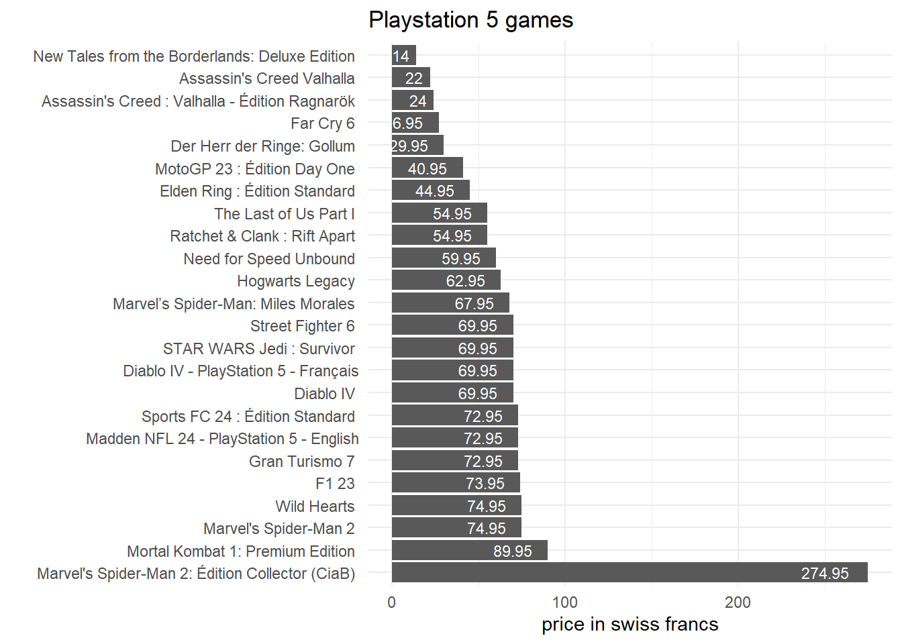

url <- "https://www.mediamarkt.ch/fr/category/_jeux-ps5-772119.html?searchParams=&sort=&view=PRODUCTGRID&page=1"
mediamarkt <- read_html(url)An introduction to web scraping in R
Web scraping is nowadays rife in statistics and data science. This data collection method has become fashionable not only in computer and data science, but also in economics, sociology and social sciences in general. The reasons for the success of web scraping need hardly to be told at length: the usefulness of web scrapping, extracting data from whatever website we visit, is self-evident. Go to any Wikipedia page, and you can extract whatever data table in contains into your favorite statistical software. The potential of web scraping is huge and will be increasingly used in social sciences.
The main goal of this post is to show the basics of web scraping using R and the package rvest. To do so, I draw extensively on Paul C. Bauer’s Computational Social Sciences manual, which explains in depth how to do web scraping in R.
Getting data: videogame prices
I will here use web scraping to get video-game prices in Switzerland. The first step of web scraping is to find a webpage from which you want to collect data. To collect the prices of video-games, I need a web page from for instance a chain stores. In Switzerland, MediaMarkt is a famous chain stores selling consumer electronics and most Swiss people who still buy or order physical copy of their favorite video-games go to or order from MediaMarkt.
For the anecdote, at the time and for many years (at least until I was 18 in the 2010s), MediaMarkt used to sell video-games slightly below market prices and some stores in Geneva even sometimes sold copies before the release date. The situation has much changed since and the stores are now barely able to sell and distribute physical copies day one (it was the case this year at least for Wo Long and Dead Space 2 remake).
I search then, on MediaMarkt website, the webpage dedicated to video-games. The webpages are separated by video-games platforms/consoles, so I choose to focus on Playstation 5 games. I store the link in an object called url. Then, the web page can be read in R using read_html():
The next step is to search and select each videogame price as well as the videogame’s titles using the chrome extension selectorgadget. This step is a bit tricky and is a pain because selectorgadget is a chrome-only extension. So if you don’t have chrome, you have to install it and then add selector gadget on it. To use selectorgadget, just click on what you want to collect on the webpage and then copy the css selector which is on the left of the selectorgadget bar.
Then, you just have to paste it into the html_nodes function (here .info-wrapper for the price, then .product-link for the title).
price <- html_nodes(mediamarkt, ".info-wrapper")
game <- html_nodes(mediamarkt, ".product-link")Then, html_text() will extract the information we want:
price <- html_text(price, trim = TRUE)
game <- html_text(game, trim = TRUE)
head(price)[1] "274.95\r\n\t\r\n\t\t\tTVA compris, plus frais d’expédition 0.-"
[2] "72.95\r\n\t\r\n\t\t\tTVA compris, plus frais d’expédition 0.-"
[3] "67.95\r\n\t\r\n\t\t\tTVA compris, plus frais d’expédition 0.-"
[4] "69.95\r\n\t\r\n\t\t\tTVA compris, plus frais d’expédition 0.-"
[5] "73.95\r\n\t\r\n\t\t\tTVA compris, plus frais d’expédition 0.-"
[6] "54.95\r\n\t\r\n\t\t\tTVA compris, plus frais d’expédition 0.-" head(game)[1] "Marvel's Spider-Man 2: Édition Collector (CiaB) - PlayStation 5 - Allemand, Français, Italien"
[2] "Sports FC 24 : Édition Standard - PlayStation 5 - Allemand, Français, Italien"
[3] "Marvel’s Spider-Man: Miles Morales - PlayStation 5 - Allemand, Français, Italien"
[4] "STAR WARS Jedi : Survivor - PlayStation 5 - Allemand, Français, Italien"
[5] "F1 23 - PlayStation 5 - Allemand, Français, Italien"
[6] "Ratchet & Clank : Rift Apart - PlayStation 5 - Allemand, Français, Italien" It worked well for the game titles (even if they could be simplified), but not so much for prices. We need to extract the latter from the text in the price object. This can be done using function gsub() and some Regex manipulation:
price_final <- as.numeric(gsub("([0.001-9]+).*$", "\\1", price))
#"([0.001-9]+).*$" means: "keep only characters from 0.001 to 9 multiple times" it will thus extract the number from the character list we got with html_text()
price_final [1] 274.95 72.95 67.95 69.95 73.95 54.95 44.95 69.95 62.95 59.95
[11] 69.95 74.95 54.95 40.95 72.95 29.95 69.95 14.00 72.95 26.95
[21] 22.00 24.00 74.95 89.95Similarly, the video-game titles can be simplified using some Regex:
game_final <- gsub("- PlayStation 5 - Allemand.*", "", game)And finally, prices and titles can be combined in a dataframe
data <- data.frame(game_final, price_final)
data %>% gt()| game_final | price_final |
|---|---|
| Marvel's Spider-Man 2: Édition Collector (CiaB) | 274.95 |
| Sports FC 24 : Édition Standard | 72.95 |
| Marvel’s Spider-Man: Miles Morales | 67.95 |
| STAR WARS Jedi : Survivor | 69.95 |
| F1 23 | 73.95 |
| Ratchet & Clank : Rift Apart | 54.95 |
| Elden Ring : Édition Standard | 44.95 |
| Street Fighter 6 | 69.95 |
| Hogwarts Legacy | 62.95 |
| Need for Speed Unbound | 59.95 |
| Diablo IV | 69.95 |
| Marvel's Spider-Man 2 | 74.95 |
| The Last of Us Part I | 54.95 |
| MotoGP 23 : Édition Day One | 40.95 |
| Gran Turismo 7 | 72.95 |
| Der Herr der Ringe: Gollum | 29.95 |
| Diablo IV - PlayStation 5 - Français | 69.95 |
| New Tales from the Borderlands: Deluxe Edition | 14.00 |
| Madden NFL 24 - PlayStation 5 - English | 72.95 |
| Far Cry 6 | 26.95 |
| Assassin's Creed Valhalla | 22.00 |
| Assassin's Creed : Valhalla - Édition Ragnarök | 24.00 |
| Wild Hearts | 74.95 |
| Mortal Kombat 1: Premium Edition | 89.95 |
We have thus collected every game’s title and price on the first page of MediaMarkt Playstation 5 games.
data %>%
ggplot()+
aes(y = reorder(game_final, -price_final), x = price_final)+
geom_col()+
geom_text(aes(label = price_final), size = 3, hjust = 1.4, color = "white")+
theme_minimal(base_size = 11)+
labs(title = "Playstation 5 games",
y = "", x = "price in swiss francs")
Getting data on all pages
We have until now collected data only the first page of the website, but ideally we want to be able to collect data on all pages automatically. This can be done as follow:
First, create a function which will automatically most of the steps: reading the url (read_html), the css nodes found with the chrome extension SelectorGadget and extracting the information of interest:
scrape_website <- function(url){
website <- read_html(url)
title <- html_nodes(website, ".product-link")
price <- html_nodes(website, ".info-wrapper")
df <- data.frame(game = gsub("- PlayStation 5 - Allemand.*", "", html_text(title, trim = TRUE)),
price = as.numeric(gsub("([0.005-9]+).*$", "\\1", html_text(price, trim = TRUE))))
return(df)
}But what about the url? In our example, there are 21 pages in total, resulting in 21 different url. Fortunately, since those pages are in fact a list of products, their patterns are very similar. The only difference between the pages are the “page=#” at the end, with # the number of the page. We can thus define base_url as the recurring url pattern common to all the 21 pages and then number of each particular page (pages object):
base_url <- "https://www.mediamarkt.ch/fr/category/_jeux-ps5-772119.html?searchParams=&sort=&view=PRODUCTGRID&page="
pages <- seq(1, 21, by = 1)This is an example on how to extract data using the function for the first page:
url = paste(base_url, pages[1], sep = "")
datasets <- list()
datasets[[1]] <- scrape_website(url = url)Finally, to perform web scrapping on all the pages, Paul Bauer proposes the following for loop code
datasets <- list()
for (i in 1:length(pages)){
# informative message about progress of loop
message(i, '/', length(pages))
# prepare URL
url <- paste(base_url, pages[i], sep="")
# scrape website
datasets[[i+1]] <- scrape_website(url)
# wait a couple of seconds between URL calls
Sys.sleep(0.2)
}However, I propose to simplify the code by using the map() function from the purrr package:
url <- paste(base_url, pages[1:21], sep = "") #create a vector with all the pages url
data <- url %>%
map_df(scrape_website) #apply the scrape_website function for each element of the url vector and store into a dataframeWe thus have all the data we wanted! Let’s now have a quick look at what we collected.
data %>%
summarise(mean = mean(price, na.rm = TRUE),
median = median(price, na.rm = TRUE),
sd = sd(price, na.rm = TRUE),
min = min(price, na.rm = TRUE),
max = max(price, na.rm = TRUE),
) %>%
gt(caption = "Video-games summary statistics (CHF)")| mean | median | sd | min | max |
|---|---|---|---|---|
| 37.23819 | 34.95 | 23.70447 | 5 | 300.95 |
data %>%
filter(price <= 90) %>%
ggplot()+
aes(x = price) %>%
geom_histogram(binwidth = 9, color = "white", fill = "darkblue", alpha = 0.8)+
scale_x_continuous(breaks = seq(0, 90, by = 5))+
theme_minimal(base_size = 13)+
labs(title = "Video-game price",
subtitle = "Switzerland, Playstation 5 games, July 2023",
y = "", x = "Swiss Francs (CHF)")
Getting data from a webpage table
When browsing the internet, it often happens that we come across tables but without any possibility to export this table. Web scraping allows to easily read those tables into R.
I will here import data from a table on the results of the famous 1992 Swiss voting on the adhesion to the European Economic Area. The Swiss government website provides a table here. I am almost certain that the Swiss government provides an excel or csv file on this but since I am too lazy to search for it (for my defense, the website page should allow to export directly the table into csv or excel), I will use web scraping to read this table in R and then extract the data into a dataframe.
The first step is the same as above: read the url to import the html code into R:
url <- "https://www.bk.admin.ch/ch/f/pore/va/19921206/can388.html"
page <- read_html(url)Then, html_table() can directly import the table information
table <- html_table(page, header = TRUE)
data <- table[[1]] #extract the table dataframe from the list
head(data) %>%
gt()| Canton | Electeurs | Votants | % Particip. | Oui | Non | % Oui | % Non |
|---|---|---|---|---|---|---|---|
| Zurich | 768'126 | 618'209 | 80.48% | 297'503 | 316'154 | 48.5% | 51.5% |
| Berne | 686'459 | 540'179 | 78.69% | 255'224 | 281'026 | 47.6% | 52.4% |
| Lucerne | 224'458 | 181'614 | 80.91% | 70'878 | 109'447 | 39.3% | 60.7% |
| Uri | 25'290 | 19'816 | 78.36% | 4'943 | 14'728 | 25.1% | 74.9% |
| Schwyz | 77'278 | 64'315 | 83.23% | 17'094 | 46'962 | 26.7% | 73.3% |
| Obwald | 20'713 | 16'940 | 81.78% | 4'737 | 12'062 | 28.2% | 71.8% |
There is one problem here: the numbers either contain “‘” or “%”. As a result, R read them as characters and it will not be possible to convert those number into numeric format unless all the’ and % are deleted.
data2 <- as_tibble(lapply(data, function(x) {gsub("'|%", "", x)})) # collapse all ' and % in the values to transform them into numeric
data2 <- data %>%
map_df(function(x) {gsub("'|%", "", x)}) # same using map_df from dplyrAll the ’ and % symbols are now removed. The last step is to convert the values into numeric values:
data2[,-1] <- data2[,-1] %>%
map_df(as.numeric) ## convert all columns into numeric except for canton (first column)
str(data2)tibble [27 × 8] (S3: tbl_df/tbl/data.frame)
$ Canton : chr [1:27] "Zurich" "Berne" "Lucerne" "Uri" ...
$ Electeurs : num [1:27] 768126 686459 224458 25290 77278 ...
$ Votants : num [1:27] 618209 540179 181614 19816 64315 ...
$ % Particip.: num [1:27] 80.5 78.7 80.9 78.4 83.2 ...
$ Oui : num [1:27] 297503 255224 70878 4943 17094 ...
$ Non : num [1:27] 316154 281026 109447 14728 46962 ...
$ % Oui : num [1:27] 48.5 47.6 39.3 25.1 26.7 28.2 33.9 31.9 43.8 64.9 ...
$ % Non : num [1:27] 51.5 52.4 60.7 74.9 73.3 71.8 66.1 68.1 56.2 35.1 ...